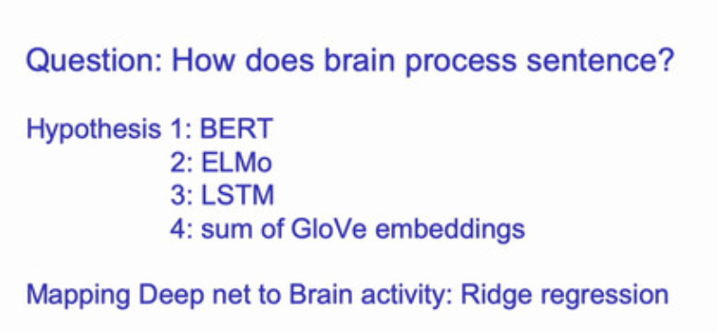
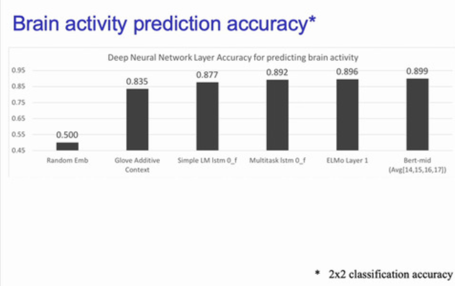

第13回
ディープラーニングの心理学的解釈 (心理学特講IIIA)
- 謝辞: 最後まで来てくださった皆様に感謝いたします
本日のメニュー
- 総復習
- 期末試験の相談
- 指定問題
- CNN を用いた心理実験計画を一つ立案せよ。実験計画には，検証すべき仮説と，その仮説を検証するための工夫が記述されていなければならない。
- 実験立案にあたっては，以下の レベル1 と レベル0 の応用とが区別される。レベル0 応用の方が評価点は高い。
- レベル1: CNN の画像認識精度を用いって特定の仮説を検証しようとするレベル。CNN を使って eコマースサイトを運用するような，CNN の本質を考えずに，表層的レベルの応用にとどまるもの。
- レベル0: CNN を人間の画像認識機構のモデルとして用いる。人間の認識機構を CNN モデルと比較することで理解しようとする試み。CNN と人間の認識機構の本質に迫るもの。
- 選択問題
- 以下の文献資料のうち，一つを選んで要約する
- 知識を問う 4 択問題 数問
- 指定問題
- LSTM
- 単語埋め込みモデル
Mitchell




資料
文献資料
- Senjowski, Unreasonable effectiveness of deep learning in artificial intelligence, 2020
- Storrs ら, Neural Network Models and Deep Learning, 2019
実習ファイル

LSTM の概念 (Shumithuber ら 2015)を改変

Mikolov(2010)

Mikolov Extension

Boden's BPTT
2. 意味論
ここでは意味論の研究史を心理学関連領域に絞ってまとめることを試みます。
意味についての言及は言語学者 Firth さらに遡れば Witgenstein まで辿ることが可能です。 ですがここでは直接関連する研究として以下をとりげます
- 第 1 世代 意味微分法 Osgood
- 第 2 世代 潜在意味解析 Ladauer
- 第 3 世代 潜在ディレクリ配置，トピックモデル
- 第 4 世代 分散埋め込みモデル word2vec とその後継モデル
- 最近の展開
3.1. 1952 年 意味微分法 Semantics Differential (SD)
チャールズ・オズグッドによって提案された意味微分法は，被験者に対象を評価させる際に形容詞対を用います。 形容詞対は 5 件法あるいはその他の変種によって評価されます。 得られた結果を 評価対象 X 形容詞対の行列にします。 すなわち評価対象者の平均を求めて得た行列を 固有値分解，正確には因子分析 FA を行います。 最大固有値から順に満足の行くまで求めます。 固有値行列への射影行列を因子負荷量と呼びます。得られた結果を下図に示しました。
From Osgood (1952) Tab. 1
上図では，50 対の形容詞対によって対象を評価した値が描かれています。
因子分析(FA) 形容詞対による多段階評定

From Osgood (1952) Fig.2
意味微分法においては，研究者の用意した形容詞対の関係に依存して対象となる概念やモノ，コトが決まります。 従って研究者の想定していない概念空間については言及できないという点が問題点として指摘できます。
このことは評価対象がよくわかっている問題であれば精度良く測定できるという長所の裏返しです。
一般的な意味，対象者が持っている意味空間全体を考えるためには，50 個の形容詞対では捉えきれないことも意味します。従って以下のような分野に適用する場合には問題が発生する可能性があると言えます
- 神経心理学的な症状である 意味痴呆 semantic dimentia を扱う場合
- 入試問題などの一般知識を評価したい場合
- 一般言語モデルを作成する場合
3.2. 1997 年 潜在意味分析 Latent Semantic Analysis (LSA, LSI)
- 潜在意味分析: 特異値分解(SVD) は，当時増大しつつあったコンピュータ計算資源を背景に一般意味論に踏み込む先鞭をつけたと考えることができます。
すなわち先代の意味微分法が持つ問題点である，評価方法が 50 対の形容詞であること， 50 をいくら増やしても，結局は研究者の恣意性が排除できないこと，評価者が人間であるため大量の評価対象を評価させることは， 心理実験参加者の拘束時間を長くするため現実的には不可能であることを解消するために，辞書そのものをコンピュータで解析するという手法を採用しました。
- 辞書の項目とその項目の記述内容とを考えます
- 特定の辞書項項目にはどの単語が使われているいるのかという共起行列 内容 $\times$ 単語 を 考え，この行列について 特異値分解 を行います。
Osgood の意味微分法で用いられた行列のサイズと比較すると，単語数が数万，項目数は数万から数十万に増加しています。 数の増加は網羅する範囲の拡大を意味します。 下図は持ちられたデータセット例を示したものです。

From Landauer and Duman (1997) Fig. A2
LSA (LSI) の問題点としては以下図を見てください
From Landauer and Dumas (1997) Fig.3
上図は，得られた結果を元に類義語テストを問いた場合に特異値分解で得られる次元数を横軸に，正解率を縦軸にプロットした図です。 次元を上げると成績の向上が認められます。 ですが，ある程度 300 以上の次元を抽出しても返って成績が低下することが示されています。
次元数を増やすことで本来の類義語検査に必要な知識以外の情報が含まれてしまうため推察されます。
3.3. 2003 年 潜在ディレクリ配置 Latent Direchlet Allocation (LDA)
潜在ディレクリ配置 Latent Direchlet Allocation: LDA1 は LSA (LSI) を確率的に拡張したモデルであると考えることができます。すなわち LDA では単語と項目との関係に確率的な生成モデルを仮定します。
その理由としては，対象となる項目，しばしば トピック と言い表すと，項目の説明に用いられる単語との間に，決定論的な関係を仮定しないと考えることによります。確率的な関係を仮定することにより柔軟な関係をモデル化が可能であるからです。
例えば，ある概念，話題(トピック) “神経” を説明する場合を考えます。 “神経” を説明するには多様な表現や説明が可能です。 “神経” を説明する文章を数多く集めてると，単語 “脳” は高頻度で出現すると予想できます。 同様にして “細胞” や “脳” も高頻度で観察できるでしょう。ところが単語 “犬” は低頻度でしょう。 単語 “アメフラシ” や “イカ” は場合によりけりでしょう。どちらも神経生理学の発展に貢献した実験動物ですから単語 “アメフラシ” や “イカ” が出現する文章もあれば，単語 “脳梗塞” や単語 “失語” と同時に出現する確率もありえます。 このように考えると確率的に考えた方が良い場合があることが分かります。
ディレクリ分布
もう一点，ノンパラメトリックモデルについて説明します。 parametric model はパラーメータを用いたモデルほどの意味です。 心理統計学の古典的な教科書では，ノンパラメトリック検定とは母集団分布のパラメータに依存 しない 統計的検定という意味で用いられます。一方 LDA の場合には推定すべき分布のパラメータ(の数)を 事前に定めない という意味で ノンパラメトリック なモデルであると言います。 すなわちある話題(トピック)とそれを説明する単語の出現確率について，取り扱う現象の複雑さに応じてモデルを記述するパラメータ数を適応的に増やして行くことを考えます。
数学的既述は省略しますが，ベータ分布 を用いると区間 $[a,b]$ の間をとる分布でパラメータにより分布が柔軟に記述できます。ベータ分布の多次元拡張を ディククリ分布 と言います。
確率空間に対して一定の成約を付した表現をシンプレックスと言ったりします。 たとえばじゃんけんで対戦相手が，グー，チョキ，パー のいずれかを出す確率は，2 つが分かれば 3 つ目の手は自ずと分かってきます。このような関係は 3 つの手の確率分布でディククリ分布として扱うことが可能です。 下図はウィキペディアから持ってきました。この図はそのようなじゃんけんの手の出現確率をディレクリ分布として表現した例だと思ってください。

多次元ディレクリ分布(多次元ベータ分布)</a> によるノンパラメトリック推定
図は <https://en.wikipedia.org/wiki/Dirichlet_distribution> より
トピック毎の単語の出現確率も上図と同じ枠組みで記述することが可能です。かつ，上図ではとりうる値が 3 つの場合ですが，話題が複雑になれば適応的に選択肢の数，すなわちディレクリ分布の次元数が増加することになります。
プレート表記
あらかじめ定められた数のパラメータを用いて分布を記述するのではなく， 解くべき問題の複雑さに応じて適応的にパラメータ数を定めることに対応して， LDA あるいはトピックモデルの図示方法として プレート表記 plate notation があります。 下図にプレート表記の例を示しました。
- 丸は確率変数
- 矢印は確率的依存関係を表現
- 観測変数は影付き(文献によっては二重丸)
- プレートは繰り返しを表す
Y からパラメータ X が生成される場合，矢印を使ってその依存関係を表現します。ノンパラメトリックモデルの場合，矢印の数を予め定めません。そのため矢印を多数描くのが煩雑なので，一つの箱代用して表現します。 これがプレート表記になります。
観測可能な変数をグレー，または二重丸で表し，観測不能な，類推すべきパラメータを白丸で表記します。 実際には観測不可能な潜在パラメータを観測データから類推することになります。
大まかなルールとして，潜在変数をギリシャアルファベット表記，観測される変数はローマアルファベット表記の場合が多いですが，一般則ですので例外もあります。
下図に潜在ディレクリ配置 LDA のプレート表記を示しました。
トピックと単語の関係
トピックモデルの要点をまとめた下図はこれまでの説明をすべて含んでいます。
出典: ブライのスライド(2009)より，文章は話題(トピック)の混合</br> 各文章はその話題から文章が生成されたと考える
興味深い応用例として Mochihashi ら(2009) の示した教師なし学習による日本語分かち書き例を示します。 下図は源氏物語をトピックモデルにより分かち書きさせた例です。どこに空白を挿入すると文字間の隣接関係を表現できるかをトピックモデルで解くことを考えた場合，空白の挿入位置が確率的に定まると仮定して居ます。
 </br>
</br>
Mochihashi らは，ルイス・キャロルの小説 “不思議の国のアリス” 原文から空白を取り除き， 文字間の隣接関係から文字の区切り，すなわち空白を推定することを試みました。結果を下図に示しました。
原著論文
R による実装
- https://cran.r-project.org/web/packages/lda/index.html
- https://cran.r-project.org/web/packages/topicmodels/index.html
3.4. 2013 年 word2vec, 単語埋め込み, ベクトル埋め込みモデル
{kind=link}
{kind=link}
- ミコロフは word2vec によりニューラルネットワークによる意味実装を示しました。 ワードツーベックと発音します。 Word2vec は実装に 2 種類あリます。それぞれ CBOW と skip-gram と命名されています。 “シーボウ” または “シーバウ” と日本人は言ったりすることが多いようです。
有名な “king” - “man” + “woman” = “queen” のアナロジーを解くことができると喧伝されました。
下図左は意味的なアナロジーがベクトルの向きとして表現されていることに注目してください。 ベクトルは方向と大きさを持っている矢印で表現されます。矢印の原点を移動する ことを考えます。たとえば “MAN” から “WOMAN” へ向かう矢印を平行移動して “KING” まで 持ってくると，その矢印は “QUEEN” を重なることが予想できます。 これがアナロジー問題の解放の直感的説明になります。
上図右は同じ word2vec でできた空間に対して，統語関係 syntax を解かせた場合を示しています。 “KING” から “KINGS” へ向かう矢印を “QUEEN” まで持ってくると “QUEENS” に重なる ことが見て取れます。
このことから上図右の赤矢印で示されたベクトルは 複数形 への変換という統語情報， 文法情報を表現しているとみなすことが可能です。
伝統的な言語学の知識では，統語構造と意味構造は別個に取り組む課題であると考えられてきました。 ところが word2vec が示す意味空間はそのような区別を考える必要があるのか否かについて 問題を提起しているように思われます。
逆に一つのモジュールで処理することができるのであれば，分割して扱う意味があるのかどうかを考える切っ掛けになると考えます。
もう一つ面白い結果を下図に示します。下図は word2vec によって世界の国とその首都との関係を主成分分析 PCA で 2 次元に描画した図です。

横軸は国と首都との関係を表現しているとみなすことができます。縦軸は下から上に向かって おおまかにユーラシア大陸を西から東へ横断しているように配置されています。 意味を表現するということは，解釈によって，この場合 PCA によって 2 次元に図示してみると 大まかに我々の知識を表現できることを示唆していると考えます。
word2vec の実装には 2 種類あります。どちらを使っても同じような結果を得ることができます。
- CBOW: Continous Bog of Words 連続単語袋
- skip-gram: スキップグラム
両者は反対の関係になります。下図を参照してください。

From Mikolov (2013) Fig. 1
CBOW も skip-gram も 3 層にニューラルネットワークです。その中間層に現れた表現を ベクトル埋め込みモデル あるいは 単語埋め込みモデル と言ったりします。
- CBOW モデルは周辺の単語の単語袋詰め表現から中央の単語を予測するモデルです。
- skip-gram は中心の単語から周辺の単語袋詰表現を予測するモデルです。
たとえば，次の文章を考えます。
["彼", "は", "意味論", "を", "論じ", "た"]
表記を簡潔にするため各単語に ID をふることにします。
{"彼":0, "は":1, "意味論":2, "を":3, "論じ":4, "た":5}
すると上記例文は
[0, 1, 2, 3, 4, 5]
と表現されます。 ウィンドウ幅がプラスマイナス 2 である CBOW モデルでは 3 層の多層パーセプトロン の入出力関係は，入力が 4 次元ベクトル，出力も 4 次元ベクトルとなります。 文の境界を無視すれば，以下のような入出力関係とみなせます。
[0,1,1,0,0,0] -> [1,0,0,0,0,0] # In:"は","意味論" Out:"彼"
[1,0,1,1,0,0] -> [0,1,0,0,0,0] # In:"彼","意味論","を" Out:"は"
[1,1,0,1,1,0] -> [0,0,1,0,0,0] # In:"彼","は","を","論じ" Out:"意味論"
[0,1,1,0,1,1] -> [0,0,0,1,0,0] # In:"は","意味論","論じ","た" Out:"を"
[0,0,1,1,0,1] -> [0,0,0,0,1,0] # In:"意味論","を","た" Out:"論じ"
[0,0,0,1,1,0] -> [0,0,0,0,0,1] # In:"を","論じ" 出力:"た"
を学習することとなります。
- CBOW にせよ skip-gram にせよ大規模コーパス，例えばウィキペディア全文を用いて訓練を行います。周辺の単語をどの程度取るかは勝手に決めます。
- Mikolov が類推に用いたデータ例を下図に示しました。国名と対応する首都名，国名とその通貨名，などは意味的関係です。一方罫線下方は文法関係です。 形容詞から副詞形を類推したり，反意語を類推したり，比較級，過去分詞，国名と国民，過去形，複数形，動詞の 3 人称単数現在形などです。

From Milolov (2013) Tab. 1
- しばしば，神経心理学や認知心理学では，それぞれの品詞別の処理を仮定したり，意味的な脱落を考えたりする場合に，異なるモジュールを想定することが行われます。
- それらの仮定したモジュールが脳内に対応関係が存在するのであれば神経心理学的には説明として十分でしょう。
- ところが word2vec で示した表現では一つの意味と統語との表現を与える中間層に味方を変える (PCA など)で描画してみれば，異なる複数の言語知識を一つの表象で表現できることが示唆されます。
- word2vec による表現が脳内に分散していると考えるとカテゴリー特異性の問題や基本概念優位性の問題をどう捉えれば良いのかについて示唆に富むと考えます。
日本語のウィキペディアを用いた word2vec と NTT 日本語の語彙特性との関連に関心のある方は 日本語 Wikipedia の word2vec 表現と語彙特性との関係, 近藤・浅川 (2017) をご覧ください
さらなる蘊蓄 負例サンプリング
Word2vec を使って大規模コーパスを学習させる際に，学習させるデータ以外に全く関係のない組み合わせをペナルティーとして与えることで精度が向上します。
発展 文章埋め込みモデルへ
単語の word2vec による表現は 3 層パーセプトロンの中間層の活性値として表現されます。
単語より大きなまとまりの意味表現，たとえば，文，段落，などの表現をどのように得るのかが問題になります。 ここで詳細には触れませんが，文表現ベクトルは各単語表現の総和であると考えるのがもっとも簡単な表現になります。 すなわち次文:
["彼", "は", "意味論", "を", "論じ", "た"]
の文表現を得るためには，各単語の word2vec 表現を足し合わせることが行われます。 ただし，単純に足し合わせたのでは BOW 単語袋表現と同じことですので，単語の順序情報が失われていることになります。 この辺りをどう改善すれば良いのかが議論されてきました。
文献
- word2vec オリジナル論文 2013年 Mikolov
- fastText 高速文埋め込みモデル
- その発展 浅川, 岡, 楠見 (2018)
Seq2sep 翻訳モデル
中間層の最終時刻の状態に文表現が埋め込まれているとすると，これを応用するば 機械翻訳 や 対話 のモデルになる。 初期の翻訳モデルである “seq2seq” の概念図を示した。 “eos” は文末 end of sentence を表す。 中央の “eos” の前がソース言語であり，中央の “eos” の後はターゲット言語の言語モデルである単純再帰型ニューラルネットワークの中間層への入力として用いられる。
注意すべきは，ソース言語の文終了時の中間層状態のみをターゲット言語の最初の中間層の入力に用いることであり， それ以外の時刻ではソース言語とターゲット言語は関係がない。 逆に言えば最終時刻の中間層状態がソース文の情報全てを含んでいるとみなすことが可能である。 この点を改善することを目指すことが 2014 年以降盛んになった。 顕著な例が後述する 双方向 RNN, LSTM を採用したり，注意 機構を導入することであった。

Sutskever et. al (2014) Sequence_to_Sequence, Fig. 1


Sutskever et. al (2014) Sequence_to_Sequence, Fig. 2
-
伝統的な統計学においては Fischer の線形判別分析を LDA と表記します。ですがデータサイエンス，すなわち統計学の一分野では近年の潜在ディレクリ配置の成功により LDA と未定義で表記された場合には潜在ディクレクリ配置を指すことが多くなっています。 ↩